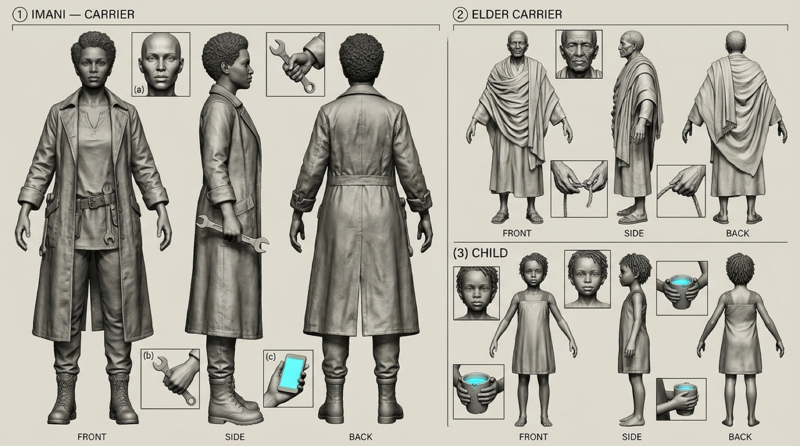
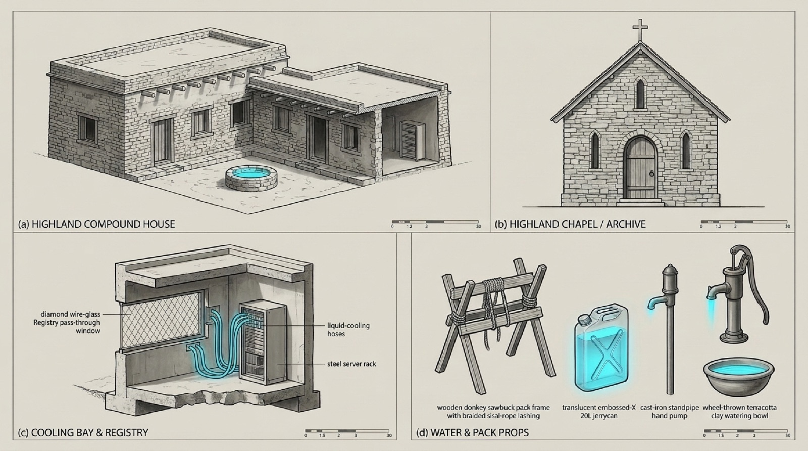
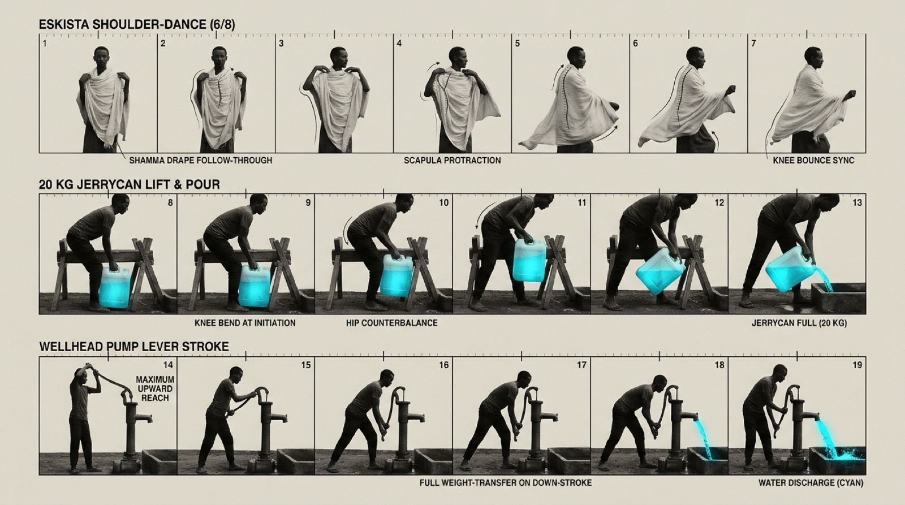
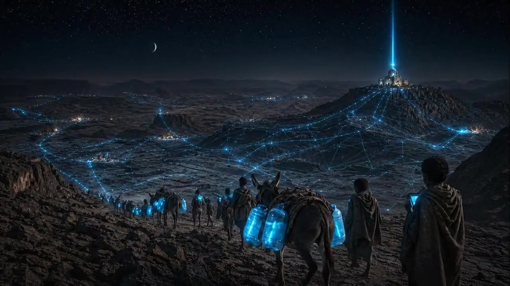

Synchronized 720p motion & surface study paired with the active 3D Machinima scene.
./v2g/V1_wellhead_pump.mp4
Section II · Orthographic Multi-View Texture Projection
The Donkey Method Gallery
How Mistletoe’s 25-bone procedural burro (donkey/coat_side.jpg) scaled to the human cast and highland architecture: Catmull-Rom lofted geometry + #424242 neutral matte surround with 58 px Euclidean dilated edge-bleed + normal-weighted tri-view onBeforeCompile UV projection.
01 · Shared Vertical Registration (v = 0.047 → 0.952)
All 9 full-body human plates (512×1024) lock soles at y = 976 px and crown at y = 48 px with centerline u = 0.500 and left-facing side profiles (-u = +Z), matching donkey/coat_side.jpg row-for-row.
02 · #424242 Matte + 58 px Dilated Bleed
Instead of hard alpha cutouts that halo dark seams at grazing 3D limb silhouettes, outward Euclidean pixel dilation smoothly transitions garment weave into a #424242 darkroom surround.
03 · Tri-View onBeforeCompile Blending
World-normal weights blend Front (+Z), Side (±X), and Back (-Z) orthographic plates across loftOpenGarment gabi shawls, weathered leather dusters, hidmo mud-plaster, and domed stone masonry.
Interactive Multi-View Plate Set
Gabi-Shawl Highland Carrier (`carrier_*.jpg` · 512×1024)


Section III · Bidirectional Game ↔ Video Loop (./v2g/V1..V6)
Six 2086 Scene Studies: Film → 3D Blocking → Omni 1.2 Flash → Live Engine
Each Night Post station was blocked in Three.js, paired with ZZlDs10FCZk reference keyframes, studied via single-shot 10-second gemini-omni-1.2-flash motion & lighting synthesis, and distilled back into real-time 60 fps IK choreography and orthographic materials.
1 · Source Film Keyframe
ZZlDs10FCZk2 · 3D Camera Blocking
Playwright Metal3 · Omni 1.2 Flash 10s Study
720p Loop4 · Contact Sheet & Engine Lock
60 FPS WebGLSection IV · Primary Visual Canon (./keyframes/kf01..kf16)
16 Extracted ZZlDs10FCZk Film Keyframes (00:01 – 02:03)
Scrub chronologically from the opening macro cyan droplet in the REC PPC camcorder gate to the daylight two-person 20 kg saddle unload and wheel-thrown terracotta donkey bowl pour.

KF10 · 00:56 · AHIYA NIGHT RIDGE
Hilltop Cross-Beacon Dome & Cyan Delaunay Ground Mesh
Over-the-shoulder ridge ascent behind the glowing saddle jugs and smartphone-lit *gabi* carriers looking toward the domed stone Cross-Beacon sanctuary and vertical sky beam.